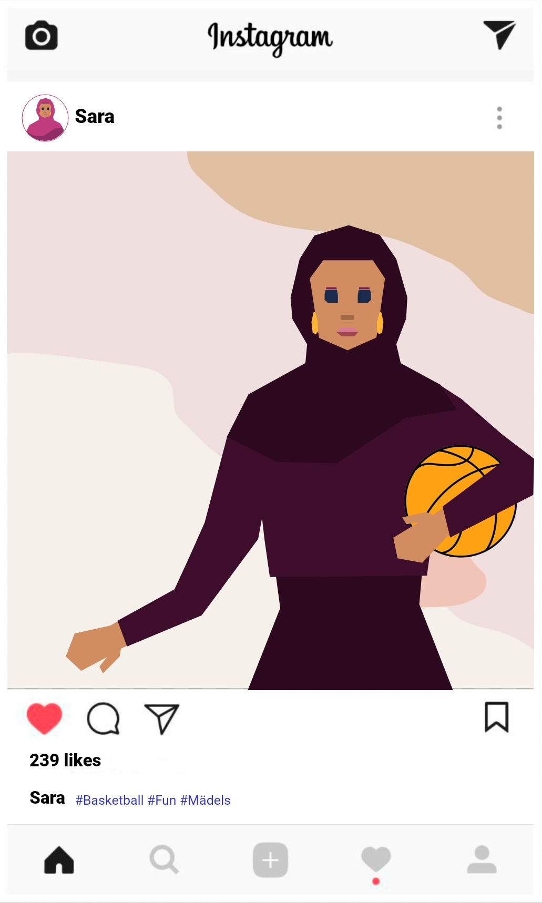

Sara, Faiz und Hamoudi definieren sich in ihren Posts über sehr verschiedene Kategorien: Religion, Nationalität, Aussehen, Hobbys, Werte. Und es gibt noch so viele mehr: Der Job, die Bildung, die Familie, das Geschlecht, Traditionen, Essen...
Die Kategorien haben für jeden Menschen eine andere Relevanz. Für Sara ist ihr Glaube und ihre Herkunft der wichtigste Teil ihrer Identität, für Hamoudi ist es sein Interesse für Mode, für Faiz ist es die Musik und seine politische Einstellung. Aber bei allen dreien gehört immer mehr dazu.
„In Wirklichkeit aber ist kein Ich, auch nicht das naivste, eine Einheit, sondern eine höchst vielfältige Welt, ein kleiner Sternenhimmel, ein Chaos von Formen, Stufen und Zuständen, von Erbschaften und Möglichkeiten."
— Hermann Hesse, deutscher Schriftsteller
In Deutschland identifizieren sich die Menschen neben ihrer Herkunft mit vielen verschiedenen Dingen. Ihre Identität ist also sehr vielfältig und wandelbar.

Ein Mosaik kann eine Metapher für unsere eigene Identität sein. Aber warum?
Weil viele Einzelteile ein Ganzes bilden -- wie bei unserer Identität. Unsere Identität besteht aus vielen Mosaiksteinen. Und viele dieser Mosaiksteine sind durch unsere Erziehung und Sozialisation geprägt: Also das, was wir kennen oder das, an was wir glauben.
In unser Mosaik gehören auch Rollen, die wir im Leben einnehmen. Viele Rollen bleiben für einen langen Zeitraum. Meistens kommen mit der Zeit neue Rollen hinzu. Man ist dann Mutter oder Vater, Studentin oder Arbeitnehmer.
Es gibt also Mosaikstücke, die fest sind. Die verändern sich wahrscheinlich nicht. Es gibt aber auch viele Mosaiksteine, die wir im Laufe des Lebens austauschen. Oder Steine, die neu hinzukommen, weil wir z.B. neue Dinge lernen oder neue Erfahrungen machen. Sie werden ein neuer Teil unserer Identität. Das Mosaik -- unsere Identität -- verändert sich also immer.